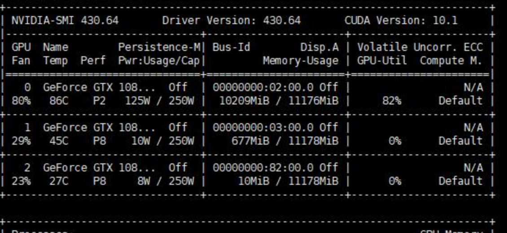
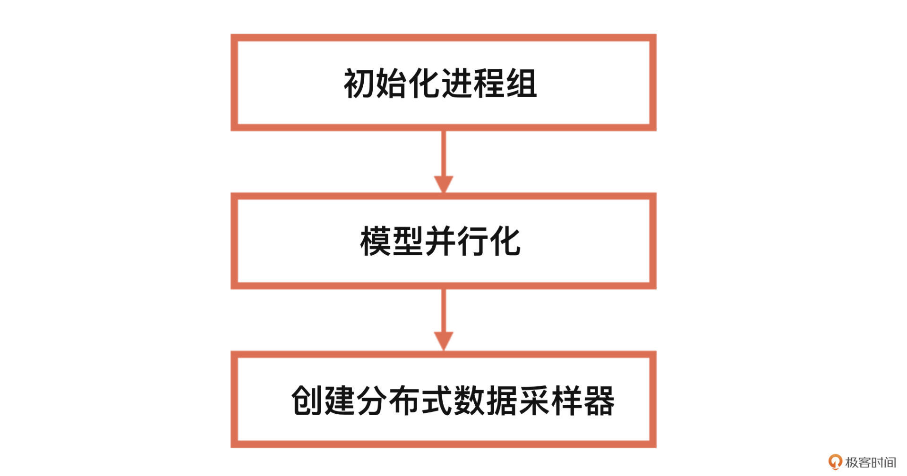

- 00 开篇词 如何高效入门PyTorch？.md.html
- 01 PyTorch：网红中的顶流明星.md.html
- 02 NumPy（上）：核心数据结构详解.md.html
- 03 NumPy（下）：深度学习中的常用操作.md.html
- 04 Tensor：PyTorch中最基础的计算单元.md.html
- 05 Tensor变形记：快速掌握Tensor切分、变形等方法.md.html
- 06 Torchvision（上）：数据读取，训练开始的第一步.md.html
- 07 Torchvision（中）：数据增强，让数据更加多样性.md.html
- 08 Torchvision（下）：其他有趣的功能.md.html
- 09 卷积（上）：如何用卷积为计算机“开天眼”？.md.html
- 10 卷积（下）：如何用卷积为计算机“开天眼”？.md.html
- 11 损失函数：如何帮助模型学会“自省”？.md.html
- 12 计算梯度：网络的前向与反向传播.md.html
- 13 优化方法：更新模型参数的方法.md.html
- 14 构建网络：一站式实现模型搭建与训练.md.html
- 15 可视化工具：如何实现训练的可视化监控？.md.html
- 16 分布式训练：如何加速你的模型训练？.md.html
- 17 图像分类（上）：图像分类原理与图像分类模型.md.html
- 18 图像分类（下）：如何构建一个图像分类模型_.md.html
- 19 图像分割（上）：详解图像分割原理与图像分割模型.md.html
- 20 图像分割（下）：如何构建一个图像分割模型？.md.html
- 21 NLP基础（上）：详解自然语言处理原理与常用算法.md.html
- 22 NLP基础（下）：详解语言模型与注意力机制.md.html
- 23 情感分析：如何使用LSTM进行情感分析？.md.html
- 24 文本分类：如何使用BERT构建文本分类模型？.md.html
- 25 摘要：如何快速实现自动文摘生成？.md.html
- 加餐 机器学习其实就那么几件事.md.html
- 用户故事 Tango：师傅领进门，修行在个人.md.html
- 答疑篇 思考题答案集锦.md.html
- 结束语 人生充满选择，选择与努力同样重要.md.html
- 捐赠
16 分布式训练：如何加速你的模型训练？
你好，我是方远。
在之前的课程里，我们一起学习了深度学习必备的内容，包括构建网络、损失函数、优化方法等，这些环节掌握好了，我们就可以训练很多场景下的模型了。
但是有的时候，我们的模型比较大，或者训练数据比较多，训练起来就会比较慢，该怎么办呢？这时候牛气闪闪的分布式训练登场了，有了它，我们就可以极大地加速我们的训练过程。
这节课我就带你入门分布式训练，让你吃透分布式训练的工作原理，最后我还会结合一个实战项目，带你小试牛刀，让你在动手过程中加深对这部分内容的理解。
分布式训练原理
在具体介绍分布式训练之前，我们需要先简要了解一下为什么深度学习要使用GPU。
在我们平时使用计算机的时候，程序都是将进程或者线程的数据资源放在内存中，然后在CPU进行计算。通常的程序中涉及到了大量的if else等分支逻辑操作，这也是CPU所擅长的计算方式。
而在深度学习中，模型的训练与计算过程则没有太多的分支，基本上都是矩阵或者向量的计算，而这种暴力又单纯的计算形式非常适合用GPU处理，GPU 的整个处理过程就是一个流式处理的过程。
但是再好的车子，一个缸的发动机也肯定比不过12个缸的，同理单单靠一个GPU，速度肯定还是不够快，于是就有了多个GPU协同工作的办法，即分布式训练。分布式训练，顾名思义就是训练的过程是分布式的，重点就在于后面这两个问题：
1.谁分布了？答案有两个：数据与模型。- 2.怎么分布？答案也有两个：单机多卡与多机多卡。
也就是说，为了实现深度学习的分布式训练，我们需要采用单机多卡或者多机多卡的方式，让分布在不同GPU上的数据和模型协同训练。那么接下来，我们先从简单的单机单卡入手，了解一下GPU的训练过程。
单机单卡
想象一下，如果让你把数据或者模型推送到GPU上，需要做哪几步操作呢？让我们先从单GPU的情况出发。
第一步，我们需要知道手头有多少GPU。PyTorch中使用torch.cuda.is_available()函数来判断当前的机器是否有可用的GPU，而函数torch.cuda.device_count()则可以得到目前可用的GPU的数量。
第二步，获得GPU的一个实例。例如下面的语句：
device = torch.device("cuda:0" if torch.cuda.is_available() else "cpu")
这里torch.device代表将torch.Tensor分配到的设备，是一个设备对象实例，也就是GPU。其中cuda: 0表示我们使用的是第一块GPU。当然你也可以不用声明“:0”，默认就从第一块开始。如果没有GPU（torch.cuda.is_available()），那就只能使用CPU了。
第三步，将数据或者模型推到GPU上去，这个过程我们称为迁移。
在PyTorch中，这个过程的封装程度非常高，换句话说，我们只需要保证即将被推到GPU的内容是张量（Tensor）或者模型（Module），就可以用to()函数快速进行实现。例如：
data = torch.ones((3, 3))
print(data.device)
# Get: cpu
# 获得device
device = torch.device("cuda: 0")
# 将data推到gpu上
data_gpu = data.to(device)
print(data_gpu.device)
# Get: cuda:0
在上面这段代码中，我们首先创建了一个常规的张量data，通过device属性，可以看到data现在是在CPU上的。随后，我们通过to()函数将data迁移到GPU上，同样也能通过device属性看到data确实已经存在于GPU上了。
那么对于模型，是否也是一样的操作呢？答案是肯定的，我们接下来看一个例子：
net = nn.Sequential(nn.Linear(3, 3))
net.to(device)
这里仍旧使用to()函数即可。
单机单卡的模式，相当于有一批要处理加工的产品，只分给了一个工人和一台机器来完成，这种情况下数量少了还可以，但是一旦产品太多了，就得加人、加机器才能快速交工了。
深度学习也是一样，在很多场景中，比如推荐算法模型、语言模型等，往往都有着百万、千万甚至上亿的训练数据，这样如果只用一张卡的话肯定是搞不定了。于是就有了单机多卡和多机多卡的解决方案。
单机多卡
那么，在PyTorch中，单机多卡的训练是如何进行的呢？其实PyTorch提供了好几种解决方案，咱们先看一个最简单也是最常用的办法：nn.DataParallel()。其具体定义如下：
torch.nn.DataParallel(module, device_ids=None, output_device=None, dim=0)
在这里，module就是你定义的模型，device_ids即为训练模型时用到的GPU设备号，output_device表示输出结果的device，默认为0也就是第一块卡。
我们可以使用nvidia-smi命令查看GPU使用情况。如果你足够细心就会发现，使用多个卡做训练的时候，output_device的卡所占的显存明显大一些。
继续观察你还会发现，使用DataParallel时，数据的使用是并行的，每张卡获得的数据都一样多，但是输出的loss则是所有的卡的loss都会在第output_device块GPU进行计算，这导致了output_device卡的负载进一步增加。

就这么简单？对，就这么简单，只需要一个DataParallel函数就可以将模型分发到多个GPU上。但是我们还是需要了解这内部的运行逻辑，因为只有了解了这个逻辑，在以后的开发中遇到了诸如时间计算、资源预估、优化调试问题的时候，你才可以更好地运用GPU，让多GPU的优势真正发挥出来。
在模型的前向计算过程中，数据会被划分为多个块，被推送到不同的GPU进行计算。但是不同的是，模型在每个GPU中都会复制一份。我们看一下后面的代码：
class ASimpleNet(nn.Module):
def __init__(self, layers=3):
super(ASimpleNet, self).__init__()
self.linears = nn.ModuleList([nn.Linear(3, 3, bias=False) for i in range(layers)])
def forward(self, x):
print("forward batchsize is: {}".format(x.size()[0]))
x = self.linears(x)
x = torch.relu(x)
return x
batch_size = 16
inputs = torch.randn(batch_size, 3)
labels = torch.randn(batch_size, 3)
inputs, labels = inputs.to(device), labels.to(device)
net = ASimpleNet()
net = nn.DataParallel(net)
net.to(device)
print("CUDA_VISIBLE_DEVICES :{}".format(os.environ["CUDA_VISIBLE_DEVICES"]))
for epoch in range(1):
outputs = net(inputs)
# Get:
# CUDA_VISIBLE_DEVICES : 3, 2, 1, 0
# forward batchsize is: 4
# forward batchsize is: 4
# forward batchsize is: 4
# forward batchsize is: 4
在上面的程序中，我们通过CUDA_VISIBLE_DEVICES得知了当前程序可见的GPU数量为4，而我们的batch size为16，输出每个GPU上模型forward函数内部的print内容，验证了每个GPU获得的数据量都是4个。这表示，DataParallel 会自动帮我们将数据切分、加载到相应 GPU，将模型复制到相应 GPU，进行正向传播计算梯度并汇总。
多机多卡
多机多卡一般都是基于集群的方式进行大规模的训练，需要涉及非常多的方面，咱们这节课只讨论最基本的原理和方法。在具体实践中，你可能还会遇到其它网络或环境等问题，届时需要具体问题具体解决。
DP与DDP
刚才我们已经提到，对于单机多卡训练，有一个最简单的办法：DataParallel。其实PyTorch的数据并行还有一个主要的API，那就是DistributedDataParallel。而DistributedDataParallel也是我们实现多机多卡的关键API。
DataParallel简称为DP，而DistributedDataParallel简称为DDP。我们来详细看看DP与DDP的区别。
先看DP，DP是单进程控制多GPU。从之前的程序中，我们也可以看出，DP将输入的一个batch数据分成了n份（n为实际使用的GPU数量），分别送到对应的GPU进行计算。
在网络前向传播时，模型会从主GPU复制到其它GPU上；在反向传播时，每个GPU上的梯度汇总到主GPU上，求得梯度均值更新模型参数后，再复制到其它GPU，以此来实现并行。
由于主GPU要进行梯度汇总和模型更新，并将计算任务下发给其它GPU，所以主GPU的负载与使用率会比其它GPU高，这就导致了GPU负载不均衡的现象。
再说说DDP，DDP多进程控制多GPU。系统会为每个GPU创建一个进程，不再有主GPU，每个GPU执行相同的任务。DDP使用分布式数据采样器（DistributedSampler）加载数据，确保数据在各个进程之间没有重叠。
在反向传播时，各GPU梯度计算完成后，各进程以广播的方式将梯度进行汇总平均，然后每个进程在各自的GPU上进行梯度更新，从而确保每个GPU上的模型参数始终保持一致。由于无需在不同GPU之间复制模型，DPP的传输数据量更少，因此速度更快。
DistributedDataParallel既可用于单机多卡也可用于多机多卡，它能够解决DataParallel速度慢、GPU负载不均衡等问题。因此，官方更推荐使用DistributedDataParallel来进行分布式训练，也就是接下来要说的DDP训练。
DDP训练
DistributedDataParallel主要是为多机多卡而设计的，不过单机上也同样可以使用。
想要弄明白DPP的训练机制，我们先要弄明白这几个分布式中的概念：
- group：即进程组。默认情况下，只有一个组，即一个world。
- world_size ：表示全局进程个数。
- rank：表示进程序号，用于进程间通讯，表示进程优先级。rank=0的主机为主节点。
使用DDP进行分布式训练的具体流程如下。接下来，我们就按步骤分别去实现。

第一步，初始化进程组。我们使用init_process_group函数来进行分布式初始化，其定义如下：
torch.distributed.init_process_group(backend, init_method=None,, world_size=-1, rank=-1, group_name='')
我们分别看看定义里的相关参数：
- backend：是通信所用的后端，可以是“nccl”或“gloo”。一般来说，nccl用于GPU分布式训练，gloo用于CPU进行分布式训练。
- init_method：字符串类型，是一个url，用于指定进程初始化方式，默认是 “env://”，表示从环境变量初始化，还可以使用TCP的方式或共享文件系统 。
- world_size：执行训练的所有的进程数，表示一共有多少个节点（机器）。
- rank：进程的编号，也是其优先级，表示当前节点（机器）的编号。
- group_name：进程组的名字。
使用nccl后端的代码如下。
torch.distributed.init_process_group(backend="nccl")
完成初始化以后，第二步就是模型并行化。正如前面讲过的，我们可以使用DistributedDataParallel，将模型分发至多GPU上，其定义如下：
torch.nn.parallel.DistributedDataParallel(module, device_ids=None, output_device=None, dim=0）
DistributedDataParallel的参数与DataParallel基本相同，因此模型并行化的用法只需将DataParallel函数替换成DistributedDataParallel即可，具体代码如下。
net = torch.nn.parallel.DistributedDataParallel(net)
最后就是创建分布式数据采样器。在多机多卡情况下，分布式训练数据的读取也是一个问题，不同的卡读取到的数据应该是不同的。
DP是直接将一个batch的数据划分到不同的卡，但是多机多卡之间进行频繁的数据传输会严重影响效率，这时就要用到分布式数据采样器DistributedSampler，它会为每个子进程划分出一部分数据集，从而使DataLoader只会加载特定的一个子数据集，以避免不同进程之间有数据重复。
创建与使用分布式数据采样器的代码如下。
train_sampler = torch.utils.data.distributed.DistributedSampler(train_dataset)
data_loader = DataLoader(train_dataset, batch_size=batch_size, sampler=train_sampler)
结合代码我给你解读一下。- 首先，我们将train_dataset送到了DistributedSampler中，并创建了一个分布式数据采样器train_sampler。
然后在构造DataLoader的时候, 参数中传入了一个sampler=train_sampler，即可让不同的进程节点加载属于自己的那份子数据集。也就是说，使用DDP时，不再是从主GPU分发数据到其他GPU上，而是各GPU从自己的硬盘上读取属于自己的那份数据。
为什么要使用分布式训练以及分布式训练的原理我们就讲到这里。相信你已经对数据并行与模型并行都有了一个初步的认识。
小试牛刀
下面我们将会讲解一个官方的ImageNet的示例，以后你可以把这个小项目当做分布式训练的一个模板来使用。
这个示例可对使用DP或DDP进行选配，下面我们就一起来看核心代码。
if args.distributed:
if args.dist_url == "env://" and args.rank == -1:
args.rank = int(os.environ["RANK"])
if args.multiprocessing_distributed:
# For multiprocessing distributed training, rank needs to be the
# global rank among all the processes
args.rank = args.rank * ngpus_per_node + gpu
dist.init_process_group(backend=args.dist_backend, init_method=args.dist_url,
world_size=args.world_size, rank=args.rank)
这里你可以重点关注示例代码中的“args.distributed”参数，args.distributed为True，表示使用DDP，反之表示使用DP。
我们来看main_worker函数中这段针对DDP的初始化代码，如果使用DDP，那么使用init_process_group函数初始化进程组。ngpus_per_node表示每个节点的GPU数量。
我们再来看main_worker函数中的这段逻辑代码。
if not torch.cuda.is_available():
print('using CPU, this will be slow')
elif args.distributed:
# For multiprocessing distributed, DistributedDataParallel constructor
# should always set the single device scope, otherwise,
# DistributedDataParallel will use all available devices.
if args.gpu is not None:
torch.cuda.set_device(args.gpu)
model.cuda(args.gpu)
# When using a single GPU per process and per
# DistributedDataParallel, we need to divide the batch size
# ourselves based on the total number of GPUs we have
args.batch_size = int(args.batch_size / ngpus_per_node)
args.workers = int((args.workers + ngpus_per_node - 1) / ngpus_per_node)
model = torch.nn.parallel.DistributedDataParallel(model, device_ids=[args.gpu])
else:
model.cuda()
# DistributedDataParallel will divide and allocate batch_size to all
# available GPUs if device_ids are not set
model = torch.nn.parallel.DistributedDataParallel(model)
elif args.gpu is not None:
torch.cuda.set_device(args.gpu)
model = model.cuda(args.gpu)
else:
# DataParallel will divide and allocate batch_size to all available GPUs
if args.arch.startswith('alexnet') or args.arch.startswith('vgg'):
model.features = torch.nn.DataParallel(model.features)
model.cuda()
else:
model = torch.nn.DataParallel(model).cuda()
这段代码是对使用CPU还是使用GPU、如果使用GPU，是使用DP还是DDP进行了逻辑选择。我们可以看到，这里用到了DistributedDataParallel函数或DataParallel函数，对模型进行并行化。- 并行化之后就是创建分布式数据采样器，具体代码如下。
if args.distributed:
train_sampler = torch.utils.data.distributed.DistributedSampler(train_dataset)
else:
train_sampler = None
train_loader = torch.utils.data.DataLoader(
train_dataset, batch_size=args.batch_size, shuffle=(train_sampler is None),
num_workers=args.workers, pin_memory=True, sampler=train_sample
这里需要注意的是，在建立Dataloader的过程中，如果sampler参数不为None，那么shuffle参数不应该被设置。
最后，我们需要为每个机器节点上的每个GPU启动一个进程。PyTorch提供了torch.multiprocessing.spawn函数，来在一个节点启动该节点所有进程，具体的代码如下。
ngpus_per_node = torch.cuda.device_count()
if args.multiprocessing_distributed:
# Since we have ngpus_per_node processes per node, the total world_size
# needs to be adjusted accordingly
args.world_size = ngpus_per_node * args.world_size
# Use torch.multiprocessing.spawn to launch distributed processes: the
# main_worker process function
mp.spawn(main_worker, nprocs=ngpus_per_node, args=(ngpus_per_node, args))
else:
# Simply call main_worker function
main_worker(args.gpu, ngpus_per_node, args)
对照代码我们梳理一下其中的要点。之前我们提到的main_worker函数，就是每个进程中，需要执行的操作。ngpus_per_node是每个节点的GPU数量（每个节点GPU数量相同），如果是多进程，ngpus_per_node * args.world_size则表示所有的节点中一共有多少个GPU，即总进程数。- 一般情况下，进程0是主进程，比如我们会在主进程中保存模型或打印log信息。
当节点数为1时，实际上就是单机多卡，所以说DDP既可以支持多机多卡，也可以支持单机多卡。
main_worker函数的调用方法如下。
main_worker(args.gpu, ngpus_per_node, args)
其中，args.gpu表示当前所使用GPU的id。而通过mp.spawn调用之后，会为每个节点上的每个GPU都启动一个进程，每个进程运行main_worker(i, ngpus_per_node, args)，其中i是从0到ngpus_per_node-1。- 模型保存的代码如下。
if not args.multiprocessing_distributed or (args.multiprocessing_distributed
and args.rank % ngpus_per_node == 0):
save_checkpoint({
'epoch': epoch + 1,
'arch': args.arch,
'state_dict': model.state_dict(),
'best_acc1': best_acc1,
'optimizer' : optimizer.state_dict(),
}, is_best)
这里需要注意的是，使用DDP意味着使用多进程，如果直接保存模型，每个进程都会执行一次保存操作，此时只使用主进程中的一个GPU来保存即可。
好，说到这，这个示例中有关分布式训练的重点内容我们就讲完了。
小结
恭喜你走到这里，这节课我们一起完成了分布式训练的学习，最后咱们一起做个总结。
今天我们不但学习了为什么要使用分布式训练以及分布式训练的原理，还一起学习了一个分布式训练的实战项目。
在分布式训练中，主要有DP与DDP两种模式。其中DP并不是完整的分布式计算，只是将一部分计算放到了多张GPU卡上，在计算梯度的时候，仍然是“一卡有难，八方围观”，因此DP会有负载不平衡、效率低等问题。而DDP刚好能够解决DP的上述问题，并且既可以用于单机多卡，也可以用于多机多卡，因此它是更好的分布式训练解决方案。
你可以将今天讲解的示例当做分布式训练的一个模板来使用。它包括了DP与DPP的完整使用过程，并且包含了如何在使用DDP时保存模型。不过这个示例中的代码里其实还有更多的细节，建议你留用课后空余时间，通过精读代码、查阅资料，多动手、多思考来巩固今天的学习成果。
每课一练
在torch.distributed.init_process_group(backend=“nccl”)函数中，backend参数可选哪些后端，它们分别有什么区别？
推荐你好好研读今天的分布式训练demo，也欢迎你记录自己的学习感悟或疑问，我在留言区等你。
© 2019 - 2023 Liangliang Lee. Powered by gin and hexo-theme-book.